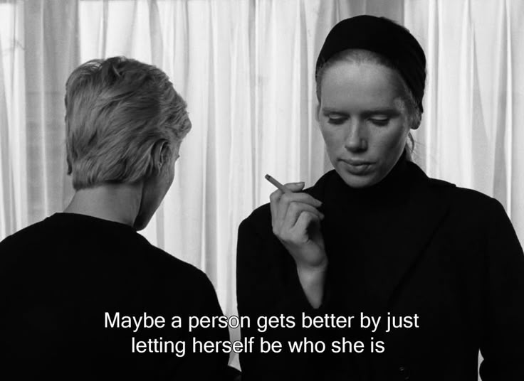

hi, i'm debarupa
this is where i dump my eclecticism as an attempt to protrude the transcendental ( in
short : my space on the web )
ever since i have known myself, or ever since I have begun to get attuned with what i like and what i don't -- i realised i like to write as much as i like to read, both of which belongs to the same bracket of my life, the one which seeks contentment and also recieves every part of it. and with every instance there's five hundred different ideas in my head punctuated with a genuine desire to learn something new. so that's what i am and my indentity ( if there's one at all metaphysically ) revolves around : the quest of knowledge, to become a life long learner >_<
i like reading old ( and new ) research papers about neural networks, i also like to train them. i am very interested in mathematics -- i am currently studying category theory. i like to watch essay films though frankly i am very inconsistent with reviewing them ( i am trying to fix that !! ). i love reading books about psych, neuro sci and politics and love collecting random facts about the 60s zeitgeist like infinity stones. if you are affectionate about any of these topics as much as I am -- REACH OUT !!! yeah ig that's all. tra-la-la 🔮 ⋆˖⁺‧₊☽◯☾₊‧⁺˖⋆
